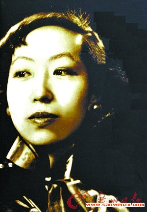

作者:wsk 创作时间：2017
但张爱玲的作品，比如从《沉香屑第一炉香》到《五四遗书》无论从空间转移，角度变换，场景设置都有所相似，而且反反复复吟唱的是一个底调：苍凉。
“虚空的空虚，一切都是虚空。”，是张爱玲曾经谈到的中国与众不同的地方，这是风华绝代的才女一个重大的发现，并自始至终地操作为她所有作品的主旋律。
她笔下的人本质始终都是自私的；她笔下的人心总是那么寒冷，迷失，怅惘。如《倾城之恋》中的白流苏与范柳原，彼此相爱得心照不宣，虚荣的白流苏却义无反顾地将自己嫁掉，目的仅仅是为了嫁个体面！《殷宝滟送花楼会》中，殷宝滟拜师于罗潜之的门下，“——有了空，就念法文，意大利文，帮罗先生翻译音乐史……罗先生真是鼓励我了的——你不知道我们的事吗？”这位乖巧，玲珑剔透的美女子，一面哄瞒着疑心重重的罗太太，让她（罗太太）“渐渐知道宝滟并没有勾引她丈夫的意思，宝滟的清白危胁着她。”另一面，她却“常常（同罗先生）一同出动去，他吻够了她，有别的指望”甚至明里直呼罗先生“Dealing”。一种人性化的扭曲，一种情、义、理冠冕堂皇掩饰下的阴暗面暴露无遗。
任何一个作家与作品的关系，无外乎有两种：跨越或是同构。张爱玲应该属于后一种，她本人与作品中的人物有极大的同构性。她笔下的人物往往局限于狭小的空间，（如《封锁》中，只捕捉电车上狭隘短暂的一暮），吵闹，拥挤，人与人之间的隔亥且难以沟通……抑或是表面上的亲热，敷衍，内心深处的情与物，灵与肉的挣扎，何尝不是张爱玲内心深处赤裸裸地灵性与虚伪抗争的映射与写照？
何况，张爱玲是奇女子。从小就要“做个特别的人”，曾有句一度有争议的名言“出名要趁早”。她出身名门，祖父是清末“清流派”代表张佩纶；外祖父是清朝名臣李鸿章，其父却只是个封建贵族的遗少，恶习累累，性情暴戾，抽鸦片，娶姨太太，动辄讴打儿女。张爱玲曾在一部作品中这样记录其父的毒打“我觉得我的头
作者:wsk 创作时间：2017
任何一个作家与作品的关系，无外乎有两种：跨越或是同构。张爱玲应该属于后一种，她本人与作品中的人物有极大的同构性。她笔下的人物往往局限于狭小的空间，（如《封锁》中，只捕捉电车上狭隘短暂的一暮），吵闹，拥挤，人与人之间的隔亥且难以沟通……抑或是表面上的亲热，敷衍，内心深处的情与物，灵与肉的挣扎，何尝不是张爱玲内心深处赤裸裸地灵性与虚伪抗争的映射与写照？
何况，张爱玲是奇女子。从小就要“做个特别的人”，曾有句一度有争议的名言“出名要趁早”。她出身名门，祖父是清末“清流派”代表张佩纶；外祖父是清朝名臣李鸿章，其父却只是个封建贵族的遗少，恶习累累，性情暴戾，抽鸦片，娶姨太太，动辄讴打儿女。张爱玲曾在一部作品中这样记录其父的毒打“我觉得我的头
好看的图片
好看的图片
好看的图片
作者:wsk 创作时间：2017
| 表头1 | 表头2 | 表头3 |
|---|---|---|
| 表内容单元格 | 表内容单元格 | 操作 |
| 表内容单元格 | 表内容单元格 | 操作 |
| 表内容单元格 | 表内容单元格 | 操作 |
| 总计 | 1000 | |